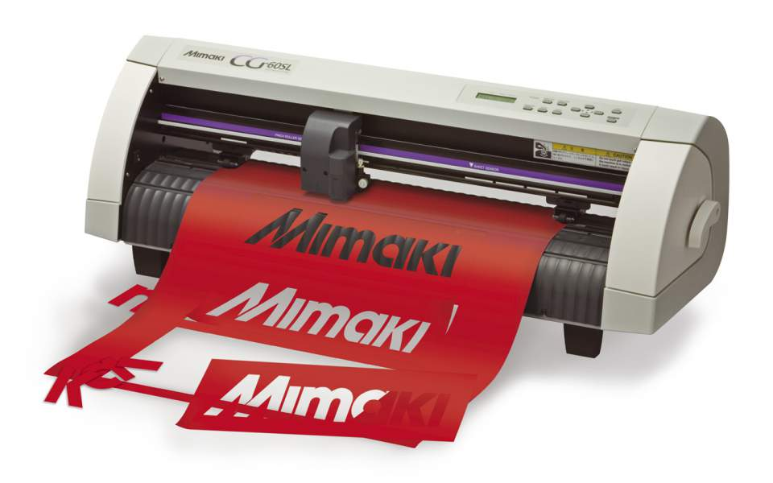
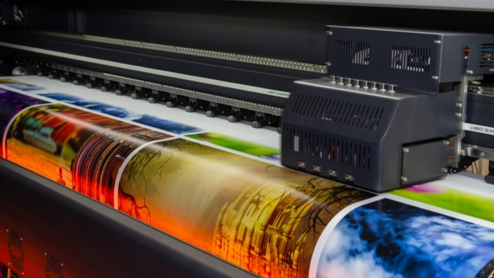

Sticker merupakan informasi visual berupa lembaran kertas, plastik, vinyl yang diberi lem atau perekat pada satu sisinya.
Contohnya, banderol harga, striping motor dsb.
Ada beberapa macam jenis stiker. Tapi yang paling umum di Indonesia biasanya stiker print dan stiker cutting.
Stiker Cutting
Stiker yang dalam proses pembuatanya dilakukan dengan cara memotong bahan stiker sesuai dengan desain yang diinginkan.

Bahan cutting stiker yang biasa digunakan di Indonesia adalah Oracal, DecoFix, ProFix, Kiwalite, SeichoFix, Asahi.
Stiker Print
